CODING AGENTS AS PIXEL WORLD MODELS
traex/DeepSeek-V4.1-Flash · common50_0047
点击播放 · 原生 RGB 像素
逐轮保存的候选
回放视频、检查图与代码变化。
每份候选均可单独播放。实际图片检查记录在下方工具轨迹中。
候选 01播放与检查图
点击播放 · 原生 RGB 像素

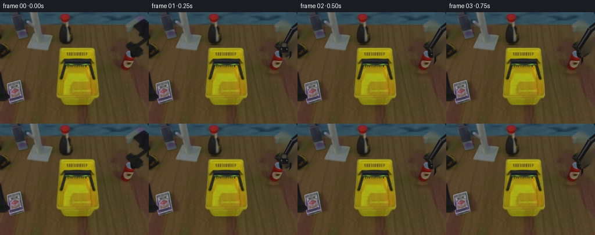
展开代码变化
--- 上一保存版本
+++ 本次保存版本
@@ -0,0 +1,534 @@
+"""Generate the 20-frame robotic can-and-basket manipulation.
+
+The scene is built from pixels in first_frame.png. Moving objects are extracted
+as rigid sprites, a clean tabletop plate is reconstructed beneath them, and a
+small articulated arm is composited over the scene.
+"""
+
+from __future__ import annotations
+
+import math
+from pathlib import Path
+
+import cv2
+import numpy as np
+from PIL import Image, ImageDraw, ImageFilter
+
+import artifact_io
+
+
+ROOT = Path(__file__).resolve().parent
+WIDTH, HEIGHT, FRAME_COUNT, FPS = 256, 192, 20, 4
+
+
+def _polygon_mask(size: tuple[int, int], points: list[tuple[int, int]]) -> np.ndarray:
+ mask = Image.new("L", size, 0)
+ ImageDraw.Draw(mask).polygon(points, fill=255)
+ return np.asarray(mask)
+
+
+def _ellipse_mask(
+ size: tuple[int, int], box: tuple[int, int, int, int]
+) -> np.ndarray:
+ mask = Image.new("L", size, 0)
+ ImageDraw.Draw(mask).ellipse(box, fill=255)
+ return np.asarray(mask)
+
+
+def _rounded_rect_mask(
+ size: tuple[int, int],
+ box: tuple[int, int, int, int],
+ radius: int,
+) -> np.ndarray:
+ mask = Image.new("L", size, 0)
+ ImageDraw.Draw(mask).rounded_rectangle(box, radius=radius, fill=255)
+ return np.asarray(mask)
+
+
+def _blur_mask(mask: np.ndarray, radius: float) -> np.ndarray:
+ image = Image.fromarray(mask)
+ return np.asarray(image.filter(ImageFilter.GaussianBlur(radius)))
+
+
+def _rgba_crop(
+ image: np.ndarray,
+ mask: np.ndarray,
+ box: tuple[int, int, int, int],
+) -> np.ndarray:
+ x0, y0, x1, y1 = box
+ crop = np.dstack((image[y0:y1, x0:x1], mask[y0:y1, x0:x1]))
+ return crop
+
+
+def _shift_rgba(sprite: np.ndarray, dx: float, dy: float) -> np.ndarray:
+ """Translate an RGBA sprite by a subpixel amount."""
+ x = np.arange(sprite.shape[1], dtype=np.float32) - dx
+ y = np.arange(sprite.shape[0], dtype=np.float32) - dy
+ xx, yy = np.meshgrid(x, y)
+ channels = []
+ for index in range(4):
+ channels.append(
+ cv2.remap(
+ sprite[:, :, index].astype(np.float32),
+ xx,
+ yy,
+ cv2.INTER_LINEAR,
+ borderMode=cv2.BORDER_CONSTANT,
+ borderValue=0,
+ )
+ )
+ return np.dstack(channels)
+
+
+def _composite_rgba(
+ canvas: np.ndarray,
+ sprite: np.ndarray,
+ x: float,
+ y: float,
+) -> None:
+ """Alpha-composite an RGBA sprite whose upper-left is at (x, y)."""
+ ix, iy = int(math.floor(x)), int(math.floor(y))
+ fx, fy = x - ix, y - iy
+ if abs(fx) > 1e-5 or abs(fy) > 1e-5:
+ sprite = _shift_rgba(sprite, -fx, -fy)
+
+ sh, sw = sprite.shape[:2]
+ x0, y0 = max(0, ix), max(0, iy)
+ x1, y1 = min(WIDTH, ix + sw), min(HEIGHT, iy + sh)
+ if x0 >= x1 or y0 >= y1:
+ return
+
+ sx0, sy0 = x0 - ix, y0 - iy
+ sx1, sy1 = sx0 + (x1 - x0), sy0 + (y1 - y0)
+ source = sprite[sy0:sy1, sx0:sx1].astype(np.float32)
+ alpha = source[:, :, 3:4] / 255.0
+ target = canvas[y0:y1, x0:x1].astype(np.float32)
+ canvas[y0:y1, x0:x1] = np.clip(
+ source[:, :, :3] * alpha + target * (1.0 - alpha), 0, 255
+ ).astype(np.uint8)
+
+
+def _draw_soft_shadow(
+ canvas: np.ndarray,
+ center: tuple[float, float],
+ radii: tuple[float, float],
+ opacity: int,
+ blur: float = 3.0,
+) -> None:
+ layer = Image.new("RGBA", (WIDTH, HEIGHT), (0, 0, 0, 0))
+ draw = ImageDraw.Draw(layer)
+ cx, cy = center
+ rx, ry = radii
+ draw.ellipse((cx - rx, cy - ry, cx + rx, cy + ry), fill=(25, 17, 8, opacity))
+ layer = layer.filter(ImageFilter.GaussianBlur(blur))
+ shadow = np.asarray(layer)
+ alpha = shadow[:, :, 3:4] / 255.0
+ canvas[:] = np.clip(
+ shadow[:, :, :3] * alpha + canvas * (1.0 - alpha), 0, 255
+ ).astype(np.uint8)
+
+
+def build_assets(source: np.ndarray) -> dict[str, np.ndarray]:
+ size = (WIDTH, HEIGHT)
+
+ basket_mask = _polygon_mask(
+ size,
+ [
+ (101, 57),
+ (169, 57),
+ (169, 142),
+ (166, 151),
+ (159, 159),
+ (108, 160),
+ (100, 154),
+ (97, 145),
+ (99, 117),
+ (103, 72),
+ ],
+ )
+ basket_mask = np.maximum(
+ basket_mask,
+ _polygon_mask(
+ size,
+ [
+ (105, 61),
+ (165, 61),
+ (161, 151),
+ (156, 156),
+ (109, 156),
+ (103, 150),
+ (101, 72),
+ ],
+ ),
+ )
+ basket_mask = cv2.morphologyEx(
+ basket_mask, cv2.MORPH_CLOSE, np.ones((3, 3), np.uint8)
+ )
+
+ can_mask = np.maximum(
+ _rounded_rect_mask(size, (201, 65, 229, 101), 10),
+ _ellipse_mask(size, (202, 59, 228, 75)),
+ )
+ can_mask = np.maximum(
+ can_mask, _ellipse_mask(size, (203, 94, 227, 105))
+ )
+
+ # The source arm is at the upper-right edge. Its segmentation is used only
+ # to erase it from the clean plate; replacement arm geometry is procedural.
+ arm_mask = _polygon_mask(
+ size,
+ [
+ (232, 8),
+ (256, 5),
+ (256, 67),
+ (250, 69),
+ (246, 62),
+ (240, 69),
+ (231, 75),
+ (223, 70),
+ (222, 62),
+ (227, 53),
+ (227, 42),
+ (229, 26),
+ ],
+ )
+
+ clean_mask = np.maximum.reduce((basket_mask, can_mask, arm_mask))
+ clean_mask = cv2.dilate(clean_mask, np.ones((5, 5), np.uint8), iterations=1)
+
+ # Reconstruct the broad tabletop regions with local inpainting, then restore
+ # a little of the wood grain from an unoccluded right-hand strip.
+ clean = cv2.inpaint(source, clean_mask, 7, cv2.INPAINT_TELEA)
+ grain_mask = (clean_mask[70:164, 96:174] > 0).astype(np.uint8) * 255
+ grain = cv2.resize(
+ source[88:174, 168:246],
+ (78, 94),
+ interpolation=cv2.INTER_LINEAR,
+ )
+ patch = clean[70:164, 96:174].astype(np.float32)
+ wood = cv2.GaussianBlur(grain, (0, 0), 1.8).astype(np.float32)
+ weight = cv2.GaussianBlur(grain_mask.astype(np.float32) / 255.0, (0, 0), 2.0)
+ weight = np.clip(weight * 0.48, 0, 0.48)[:, :, None]
+ mixed = patch * (1.0 - weight) + (wood * 0.62 + patch * 0.38) * weight
+ clean[70:164, 96:174] = np.clip(mixed, 0, 255).astype(np.uint8)
+
+ basket_box = (97, 56, 170, 161)
+ can_box = (200, 58, 231, 106)
+ return {
+ "clean": clean,
+ "basket": _rgba_crop(source, basket_mask, basket_box),
+ "can": _rgba_crop(source, can_mask, can_box),
+ "basket_box": np.array(basket_box),
+ "can_box": np.array(can_box),
+ }
+
+
+def _arm_polygon(
+ points_a: tuple[float, float],
+ points_b: tuple[float, float],
+ width_a: float,
+ width_b: float,
+) -> list[tuple[int, int]]:
+ ax, ay = points_a
+ bx, by = points_b
+ dx, dy = bx - ax, by - ay
+ length = max(1e-5, math.hypot(dx, dy))
+ nx, ny = -dy / length, dx / length
+ return [
+ (round(ax + nx * width_a / 2), round(ay + ny * width_a / 2)),
+ (round(bx + nx * width_b / 2), round(by + ny * width_b / 2)),
+ (round(bx - nx * width_b / 2), round(by - ny * width_b / 2)),
+ (round(ax - nx * width_a / 2), round(ay - ny * width_a / 2)),
+ ]
+
+
+def _draw_polygon(
+ draw: ImageDraw.ImageDraw,
+ points: list[tuple[int, int]],
+ fill: tuple[int, int, int, int],
+ outline: tuple[int, int, int, int] | None = None,
+) -> None:
+ draw.polygon(points, fill=fill, outline=outline)
+
+
+def draw_arm(
+ canvas: np.ndarray,
+ wrist: tuple[float, float],
+ grip: float,
+ angle: float,
+) -> None:
+ """Draw a rigid dark robotic arm with a parallel-jaw gripper.
+
+ grip is 0 (open) to 1 (closed). angle is the gripper's downward axis in
+ radians, measured clockwise from straight down.
+ """
+ scale = 4
+ layer = Image.new("RGBA", (WIDTH * scale, HEIGHT * scale), (0, 0, 0, 0))
+ draw = ImageDraw.Draw(layer)
+
+ def p(x: float, y: float) -> tuple[int, int]:
+ return round(x * scale), round(y * scale)
+
+ elbow = (248.0, 30.0)
+ shoulder = (282.0, 4.0)
+ wx, wy = wrist
+
+ # Fixed upper arm and the moving forearm, with a narrow metal highlight.
+ upper = _arm_polygon(shoulder, elbow, 12, 10)
+ _draw_polygon(draw, [p(*q) for q in upper], (24, 24, 27, 255))
+ _draw_polygon(
+ draw,
+ [p(*q) for q in _arm_polygon((280, 7), (247, 30), 2.2, 2.0)],
+ (58, 57, 62, 210),
+ )
+
+ forearm = _arm_polygon(elbow, wrist, 10, 7.5)
+ _draw_polygon(draw, [p(*q) for q in forearm], (20, 20, 24, 255))
+ _draw_polygon(
+ draw,
+ [p(*q) for q in _arm_polygon((247, 30), (wx - 1, wy - 1), 2.0, 1.5)],
+ (55, 54, 60, 190),
+ )
+
+ # Circular wrist joint.
+ wr = 6.0
+ draw.ellipse(
+ (p(wx - wr, wy - wr), p(wx + wr, wy + wr)),
+ fill=(52, 48, 43, 255),
+ outline=(20, 20, 22, 255),
+ width=scale,
+ )
+ draw.ellipse(
+ (p(wx - 3.2, wy - 3.2), p(wx + 3.2, wy + 3.2)),
+ fill=(72, 66, 58, 255),
+ )
+
+ ca, sa = math.cos(angle), math.sin(angle)
+
+ def local(x: float, y: float) -> tuple[float, float]:
+ # local +y points away from the wrist toward the fingers.
+ return wx + x * ca + y * sa, wy - x * sa + y * ca
+
+ palm_near = (-7.2, 3.0)
+ palm_far = (7.2, 3.0)
+ palm_tip_l = (-7.2, 12.5)
+ palm_tip_r = (7.2, 12.5)
+ _draw_polygon(
+ draw,
+ [p(*local(*q)) for q in (palm_near, palm_far, palm_tip_r, palm_tip_l)],
+ (21, 21, 23, 255),
+ (38, 37, 38, 255),
+ )
+ draw.line(
+ [p(*local(-4.8, 5.0)), p(*local(-4.8, 11.0))],
+ fill=(67, 63, 59, 255),
+ width=2 * scale,
+ )
+
+ jaw_spread = 5.3 + (1.0 - grip) * 4.0
+ jaw_length = 14.0 - 1.8 * grip
+ for sign in (-1, 1):
+ x_in = sign * jaw_spread
+ x_out = sign * (jaw_spread + 3.2)
+ _draw_polygon(
+ draw,
+ [
+ p(*local(x_in, 10.5)),
+ p(*local(x_out, 10.5)),
+ p(*local(x_out, 10.5 + jaw_length * 0.58)),
+ p(*local(x_in - sign * 1.2, 10.5 + jaw_length)),
+ p(*local(x_in, 10.5 + jaw_length * 0.65)),
+ ],
+ (18, 18, 20, 255),
+ (35, 34, 35, 255),
+ )
+
+ # Small silver fasteners make the gripper read as rigid hardware.
+ for sign in (-1, 1):
+ qx, qy = local(sign * 4.6, 6.6)
+ draw.ellipse(
+ (p(qx - 0.8, qy - 0.8), p(qx + 0.8, qy + 0.8)),
+ fill=(104, 96, 81, 235),
+ )
+
+ layer = layer.resize((WIDTH, HEIGHT), Image.Resampling.LANCZOS)
+ arm = np.asarray(layer)
+ _composite_rgba(canvas, arm, 0, 0)
+
+
+def _lerp(a: float, b: float, t: float) -> float:
+ return a + (b - a) * t
+
+
+def _smooth(t: float) -> float:
+ t = max(0.0, min(1.0, t))
+ return t * t * (3.0 - 2.0 * t)
+
+
+def _ease_out(t: float) -> float:
+ t = max(0.0, min(1.0, t))
+ return 1.0 - (1.0 - t) ** 3
+
+
+def _keyframes(
+ frame: int,
+ keys: list[tuple[int, float, float]],
+) -> tuple[float, float]:
+ if frame <= keys[0][0]:
+ return keys[0][1], keys[0][2]
+ for (f0, x0, y0), (f1, x1, y1) in zip(keys, keys[1:]):
+ if frame <= f1:
+ t = _smooth((frame - f0) / (f1 - f0))
+ return _lerp(x0, x1, t), _lerp(y0, y1, t)
+ return keys[-1][1], keys[-1][2]
+
+
+def _basket_xy(frame: int) -> tuple[float, float]:
+ if frame <= 16:
+ return 0.0, 0.0
+ t = _smooth((frame - 16) / 3.0)
+ return -2.0 * t, -31.0 * t
+
+
+def _can_xy(frame: int) -> tuple[float, float]:
+ # Source top-left of can sprite is (200, 58).
+ if frame <= 4:
+ return 0.0, 0.0
+ if frame <= 7:
+ t = _smooth((frame - 4) / 3.0)
+ return -10.0 * t, -22.0 * t
+ if frame <= 11:
+ t = _smooth((frame - 7) / 4.0)
+ return _lerp(-10.0, -67.0, t), _lerp(-22.0, -6.0, t)
+ if frame <= 15:
+ t = _smooth((frame - 11) / 4.0)
+ return _lerp(-67.0, -68.0, t), _lerp(-6.0, 33.0, t)
+ bx, by = _basket_xy(frame)
+ return -68.0 + bx, 33.0 + by
+
+
+def _wrist_pose(frame: int) -> tuple[tuple[float, float], float, float]:
+ # (wrist position, gripper angle, grip amount)
+ if frame <= 2:
+ t = _smooth(frame / 2.0)
+ wrist = (_lerp(240.0, 226.0, t), _lerp(48.0, 66.0, t))
+ return wrist, 0.0, 0.0
+ if frame <= 4:
+ return (225.0, 67.0), 0.0, _smooth((frame - 2) / 2.0)
+ if frame <= 7:
+ t = _smooth((frame - 4) / 3.0)
+ return (
+ _lerp(225.0, 199.0, t),
+ _lerp(67.0, 52.0, t),
+ ), -0.10 * t, 1.0
+ if frame <= 11:
+ t = _smooth((frame - 7) / 4.0)
+ return (
+ _lerp(199.0, 146.0, t),
+ _lerp(52.0, 83.0, t),
+ ), -0.10 + 0.15 * t, 1.0
+ if frame <= 14:
+ t = _smooth((frame - 11) / 3.0)
+ return (
+ _lerp(146.0, 140.0, t),
+ _lerp(83.0, 120.0, t),
+ ), 0.05 + 0.10 * t, 1.0
+ if frame <= 16:
+ t = _smooth((frame - 14) / 2.0)
+ return (
+ _lerp(140.0, 162.0, t),
+ _lerp(120.0, 96.0, t),
+ ), 0.15 - 0.15 * t, 1.0 - 0.75 * t
+ if frame <= 18:
+ t = _smooth((frame - 16) / 2.0)
+ return (
+ _lerp(162.0, 137.0, t),
+ _lerp(96.0, 76.0, t),
+ ), -0.08 * t, _lerp(0.25, 1.0, t)
+ t = _smooth((frame - 18) / 1.0)
+ return (
+ _lerp(137.0, 135.0, t),
+ _lerp(76.0, 47.0, t),
+ ), -0.08, 1.0
+
+
+def render_frame(assets: dict[str, np.ndarray], frame: int) -> np.ndarray:
+ source = assets["source"]
+ if frame == 0:
+ return source.copy()
+
+ canvas = assets["clean"].copy()
+ basket_sprite = assets["basket"]
+ can_sprite = assets["can"]
+ basket_box = assets["basket_box"]
+ can_box = assets["can_box"]
+
+ bx, by = _basket_xy(frame)
+ cx, cy = _can_xy(frame)
+
+ # Contact shadows are detached from their objects when the object is raised.
+ basket_lift = max(0.0, -by)
+ if frame >= 16:
+ shadow_scale = max(0.45, 1.0 - basket_lift / 55.0)
+ _draw_soft_shadow(
+ canvas,
+ (133.0 + bx * 0.3, 154.0),
+ (35.0 * shadow_scale, 7.0 * shadow_scale),
+ round(92 * shadow_scale),
+ blur=3.5,
+ )
+ can_lift = max(0.0, -cy)
+ if can_lift < 4.0:
+ _draw_soft_shadow(canvas, (215.0 + cx, 105.0), (14, 4), 70, 2.5)
+
+ _composite_rgba(
+ canvas,
+ basket_sprite,
+ float(basket_box[0] + bx),
+ float(basket_box[1] + by),
+ )
+
+ # The can enters the basket after frame 11. A small inward nudge and scale
+ # change make the drop read without deforming the can itself.
+ if frame >= 8:
+ _composite_rgba(
+ canvas,
+ can_sprite,
+ float(can_box[0] + cx),
+ float(can_box[1] + cy),
+ )
+
+ wrist, angle, grip = _wrist_pose(frame)
+ draw_arm(canvas, wrist, grip, angle)
+
+ # In the first phase the can is still resting on the table and is in front
+ # of the lower jaw; after the grasp the same sprite is already composited.
+ if frame < 8:
+ _composite_rgba(
+ canvas,
+ can_sprite,
+ float(can_box[0] + cx),
+ float(can_box[1] + cy),
+ )
+
+ return np.clip(canvas, 0, 255).astype(np.uint8)
+
+
+def main() -> None:
+ source = np.asarray(Image.open(ROOT / "first_frame.png").convert("RGB"))
+ assets = build_assets(source)
+ assets["source"] = source
+
+ frames = np.stack([render_frame(assets, index) for index in range(FRAME_COUNT)])
+ assert frames.shape == (FRAME_COUNT, HEIGHT, WIDTH, 3)
+ assert frames.dtype == np.uint8
+ assert np.array_equal(frames[0], source)
+
+ # Keep a clean-plate candidate available for inspection and debugging.
+ Image.fromarray(assets["clean"]).save(ROOT / "clean_plate.png")
+ artifact_io.save(frames, ROOT)
+ print(f"wrote {FRAME_COUNT} frames at {WIDTH}x{HEIGHT}, {FPS} fps")
+
+
+if __name__ == "__main__":
+ main()
候选 02播放与检查图
点击播放 · 原生 RGB 像素

展开代码变化
--- 上一保存版本
+++ 本次保存版本
@@ -43,6 +43,21 @@
mask = Image.new("L", size, 0)
ImageDraw.Draw(mask).rounded_rectangle(box, radius=radius, fill=255)
return np.asarray(mask)
+
+
+def _row_span_mask(
+ size: tuple[int, int],
+ keys: list[tuple[int, int, int]],
+) -> np.ndarray:
+ """Fill a silhouette from left/right edge keyframes by image row."""
+ mask = np.zeros((size[1], size[0]), dtype=np.uint8)
+ for (y0, l0, r0), (y1, l1, r1) in zip(keys, keys[1:]):
+ for y in range(y0, min(y1, size[1])):
+ t = (y - y0) / max(1, y1 - y0)
+ left = round(_lerp(l0, l1, t))
+ right = round(_lerp(r0, r1, t))
+ mask[y, left : right + 1] = 255
+ return mask
def _blur_mask(mask: np.ndarray, radius: float) -> np.ndarray:
@@ -131,46 +146,37 @@
def build_assets(source: np.ndarray) -> dict[str, np.ndarray]:
size = (WIDTH, HEIGHT)
- basket_mask = _polygon_mask(
+ basket_mask = _row_span_mask(
size,
[
- (101, 57),
- (169, 57),
- (169, 142),
- (166, 151),
- (159, 159),
- (108, 160),
- (100, 154),
- (97, 145),
- (99, 117),
- (103, 72),
+ (56, 105, 160),
+ (61, 103, 163),
+ (70, 101, 164),
+ (88, 101, 165),
+ (108, 99, 167),
+ (128, 97, 169),
+ (143, 97, 170),
+ (149, 101, 166),
+ (155, 106, 160),
+ (161, 110, 155),
],
- )
- basket_mask = np.maximum(
- basket_mask,
- _polygon_mask(
- size,
- [
- (105, 61),
- (165, 61),
- (161, 151),
- (156, 156),
- (109, 156),
- (103, 150),
- (101, 72),
- ],
- ),
)
basket_mask = cv2.morphologyEx(
basket_mask, cv2.MORPH_CLOSE, np.ones((3, 3), np.uint8)
)
- can_mask = np.maximum(
- _rounded_rect_mask(size, (201, 65, 229, 101), 10),
- _ellipse_mask(size, (202, 59, 228, 75)),
- )
- can_mask = np.maximum(
- can_mask, _ellipse_mask(size, (203, 94, 227, 105))
+ can_mask = _row_span_mask(
+ size,
+ [
+ (60, 212, 222),
+ (63, 208, 225),
+ (66, 204, 227),
+ (71, 202, 228),
+ (86, 201, 229),
+ (98, 202, 228),
+ (103, 206, 225),
+ (106, 209, 223),
+ ],
)
# The source arm is at the upper-right edge. Its segmentation is used only
@@ -196,27 +202,22 @@
clean_mask = np.maximum.reduce((basket_mask, can_mask, arm_mask))
clean_mask = cv2.dilate(clean_mask, np.ones((5, 5), np.uint8), iterations=1)
- # Reconstruct the broad tabletop regions with local inpainting, then restore
- # a little of the wood grain from an unoccluded right-hand strip.
+ # Reconstruct the broad tabletop regions with local inpainting. The source
+ # is noisy enough that a uniform local fill reads as tabletop once the
+ # moving sprites are composited back over it.
clean = cv2.inpaint(source, clean_mask, 7, cv2.INPAINT_TELEA)
- grain_mask = (clean_mask[70:164, 96:174] > 0).astype(np.uint8) * 255
- grain = cv2.resize(
- source[88:174, 168:246],
- (78, 94),
- interpolation=cv2.INTER_LINEAR,
- )
- patch = clean[70:164, 96:174].astype(np.float32)
- wood = cv2.GaussianBlur(grain, (0, 0), 1.8).astype(np.float32)
- weight = cv2.GaussianBlur(grain_mask.astype(np.float32) / 255.0, (0, 0), 2.0)
- weight = np.clip(weight * 0.48, 0, 0.48)[:, :, None]
- mixed = patch * (1.0 - weight) + (wood * 0.62 + patch * 0.38) * weight
- clean[70:164, 96:174] = np.clip(mixed, 0, 255).astype(np.uint8)
basket_box = (97, 56, 170, 161)
- can_box = (200, 58, 231, 106)
+ can_box = (200, 59, 231, 107)
+ basket_front_mask = basket_mask.copy()
+ basket_front_mask[:116] = 0
+ basket_front_mask = cv2.GaussianBlur(
+ basket_front_mask, (0, 0), 0.55
+ )
return {
"clean": clean,
"basket": _rgba_crop(source, basket_mask, basket_box),
+ "basket_front": _rgba_crop(source, basket_front_mask, basket_box),
"can": _rgba_crop(source, can_mask, can_box),
"basket_box": np.array(basket_box),
"can_box": np.array(can_box),
@@ -409,47 +410,28 @@
def _wrist_pose(frame: int) -> tuple[tuple[float, float], float, float]:
# (wrist position, gripper angle, grip amount)
- if frame <= 2:
- t = _smooth(frame / 2.0)
- wrist = (_lerp(240.0, 226.0, t), _lerp(48.0, 66.0, t))
+ if frame <= 4:
+ t = _smooth(frame / 4.0)
+ wrist = (_lerp(240.0, 215.5, t), _lerp(49.0, 54.5, t))
return wrist, 0.0, 0.0
- if frame <= 4:
- return (225.0, 67.0), 0.0, _smooth((frame - 2) / 2.0)
- if frame <= 7:
- t = _smooth((frame - 4) / 3.0)
+ if frame <= 15:
+ cx, cy = _can_xy(frame)
+ grip = _smooth((frame - 4) / 1.0)
+ return (215.5 + cx, 54.5 + cy), 0.02 * math.sin(frame), grip
+
+ # After release, move up to the basket's top handle and close again.
+ bx, by = _basket_xy(frame)
+ if frame <= 17:
+ t = _smooth((frame - 15) / 2.0)
return (
- _lerp(225.0, 199.0, t),
- _lerp(67.0, 52.0, t),
- ), -0.10 * t, 1.0
- if frame <= 11:
- t = _smooth((frame - 7) / 4.0)
- return (
- _lerp(199.0, 146.0, t),
- _lerp(52.0, 83.0, t),
- ), -0.10 + 0.15 * t, 1.0
- if frame <= 14:
- t = _smooth((frame - 11) / 3.0)
- return (
- _lerp(146.0, 140.0, t),
- _lerp(83.0, 120.0, t),
- ), 0.05 + 0.10 * t, 1.0
- if frame <= 16:
- t = _smooth((frame - 14) / 2.0)
- return (
- _lerp(140.0, 162.0, t),
- _lerp(120.0, 96.0, t),
- ), 0.15 - 0.15 * t, 1.0 - 0.75 * t
- if frame <= 18:
- t = _smooth((frame - 16) / 2.0)
- return (
- _lerp(162.0, 137.0, t),
- _lerp(96.0, 76.0, t),
- ), -0.08 * t, _lerp(0.25, 1.0, t)
- t = _smooth((frame - 18) / 1.0)
+ _lerp(147.5, 134.0 + bx, t),
+ _lerp(88.5, 49.0 + by, t),
+ ), 0.0, 1.0 - 0.8 * t
+ t = _smooth((frame - 17) / 2.0)
return (
- _lerp(137.0, 135.0, t),
- _lerp(76.0, 47.0, t),
- ), -0.08, 1.0
+ _lerp(134.0 + bx, 132.0 + bx, t),
+ _lerp(49.0 + by, 18.0 + by, t),
+ ), 0.0, _lerp(0.2, 1.0, t)
def render_frame(assets: dict[str, np.ndarray], frame: int) -> np.ndarray:
@@ -481,35 +463,22 @@
if can_lift < 4.0:
_draw_soft_shadow(canvas, (215.0 + cx, 105.0), (14, 4), 70, 2.5)
+ basket_x = float(basket_box[0] + bx)
+ basket_y = float(basket_box[1] + by)
+ _composite_rgba(canvas, basket_sprite, basket_x, basket_y)
+
+ wrist, angle, grip = _wrist_pose(frame)
+ draw_arm(canvas, wrist, grip, angle)
+
+ # The can enters the basket after frame 11. A small inward nudge and scale
+ # change make the drop read without deforming the can itself.
_composite_rgba(
canvas,
- basket_sprite,
- float(basket_box[0] + bx),
- float(basket_box[1] + by),
- )
-
- # The can enters the basket after frame 11. A small inward nudge and scale
- # change make the drop read without deforming the can itself.
- if frame >= 8:
- _composite_rgba(
- canvas,
- can_sprite,
- float(can_box[0] + cx),
- float(can_box[1] + cy),
- )
-
- wrist, angle, grip = _wrist_pose(frame)
- draw_arm(canvas, wrist, grip, angle)
-
- # In the first phase the can is still resting on the table and is in front
- # of the lower jaw; after the grasp the same sprite is already composited.
- if frame < 8:
- _composite_rgba(
- canvas,
- can_sprite,
- float(can_box[0] + cx),
- float(can_box[1] + cy),
- )
+ can_sprite,
+ float(can_box[0] + cx),
+ float(can_box[1] + cy),
+ )
+ _composite_rgba(canvas, assets["basket_front"], basket_x, basket_y)
return np.clip(canvas, 0, 255).astype(np.uint8)
候选 03播放与检查图

可观测工具轨迹
实际执行的命令与返回图片。
命令 1exit 0
/bin/bash -c "pwd && rg --files -g '"'!*node_modules*'"' -g '"'!*.git*'"' | sed -n '1,160p'"
命令 2exit 0
/bin/bash -c "printf '%s\\n' '--- prompt.txt ---'; sed -n '1,240p' prompt.txt; printf '%s\\n' '--- GENERATION_RULES.md ---'; sed -n '1,320p' GENERATION_RULES.md"
命令 3exit 0
/bin/bash -c "find . -maxdepth 2 -type f -printf '%p %s bytes\\n' | sort | sed -n '1,200p'; printf '%s\\n' '--- tools ---'; command -v ffmpeg || true; command -v python3 || true; command -v convert || true; command -v magick || true"
命令 4exit 0
/bin/bash -c "sed -n '1,260p' artifact_io.py"
命令 5exit 0
/bin/bash -c "cat task_spec.json; printf '\\n--- player ---\\n'; sed -n '1,260p' player_template.html"
命令 6exit 0
/bin/bash -c "python3 - <<'PY'
from PIL import Image
import numpy as np
im=Image.open('first_frame.png')
print(im.mode, im.size, im.getbbox())
a=np.array(im)
print(a.shape, a.dtype, a.min(), a.max(), a.mean(axis=(0,1)))
print('corner colors',a[0,0],a[0,-1],a[-1,0],a[-1,-1])
PY"命令 7exit 0
/bin/bash -c "python3 - <<'PY' mods=['cv2','scipy','skimage','numpy','PIL'] for m in mods: try: x=__import__(m); print(m, getattr(x,'__version__','ok')) except Exception as e: print(m,'NO',e) PY"
命令 8exit 0
/bin/bash -c "python3 - <<'PY'
from PIL import Image
im=Image.open('first_frame.png')
for name,box in [('right',(190,0,256,130)),('basket',(88,55,176,170)),('can',(196,45,241,112)),('whole2x',(0,0,256,192))]:
c=im.crop(box)
if name=='whole2x': c=c.resize((768,576),Image.Resampling.NEAREST)
else: c=c.resize((c.width*4,c.height*4),Image.Resampling.NEAREST)
c.save('inspect_'+name+'.png')
PY"命令 9exit 0
/bin/bash -c "python3 - <<'PY'
from PIL import Image
im=Image.open('first_frame.png')
im.crop((225,15,256,75)).resize((31*10,60*10),Image.Resampling.NEAREST).save('arm_close.png')
im.crop((195,58,237,106)).resize((42*10,48*10),Image.Resampling.NEAREST).save('can_close.png')
im.crop((98,56,166,162)).resize((68*7,106*7),Image.Resampling.NEAREST).save('basket_close.png')
PY"命令 10exit 0
/bin/bash -c "python3 - <<'PY'
import cv2, numpy as np
im=cv2.imread('first_frame.png')[:,:,::-1]
# source palette samples around can, basket, arm
for name,(x,y) in {'canred':(214,73),'cancream':(214,85),'canrim':(214,65),'canbg':(214,61),'basket':(132,144),'basketdark':(116,145),'handle':(134,79),'arm':(247,44),'armhi':(244,37),'armdark':(250,56),'table':(180,150)}.items():
print(name, im[y,x].tolist())
PY"命令 11exit 0
/bin/bash -c "python3 - <<'PY'
from PIL import Image
import numpy as np
im=np.array(Image.open('first_frame.png'))
pts=[(97,100),(100,90),(105,120),(110,80),(115,75),(120,70),(125,65),(130,60),(130,75),(130,90),(130,100),(130,110),(130,120),(130,130),(130,140),(130,150),(110,100),(145,100),(150,75),(160,90),(160,120),(165,150)]
for x,y in pts: print((x,y), im[y,x].tolist())
PY"命令 12exit 0
/bin/bash -c "python3 - <<'PY'
import numpy as np
from PIL import Image
im=np.array(Image.open('first_frame.png'))
for y in range(55,112,5):
row=[]
for x in range(196,235,4):
c=im[y,x]; row.append(f'{c[0]:02x}{c[1]:02x}{c[2]:02x}')
print(y,' '.join(row))
PY"命令 13exit 0
/bin/bash -c "python3 - <<'PY'
import cv2, numpy as np
from PIL import Image
im=cv2.imread('first_frame.png')
mask=np.zeros(im.shape[:2],np.uint8)
cv2.rectangle(mask,(96,52),(171,166),255,-1)
# can precise-ish, don't remove arm above
cv2.ellipse(mask,(215,83),(15,24),0,0,360,255,-1)
# clip can mask top to 61
# inpaint
for r in [3,7,15]:
out=cv2.inpaint(im,mask,r,cv2.INPAINT_TELEA)
cv2.imwrite(f'plate_inpaint_{r}.png',out)
PY"命令 14exit 0
/bin/bash -c "python3 - <<'PY'
import numpy as np
from PIL import Image
im=np.array(Image.open('first_frame.png'))
# Print selected basket x values, y lines
for y in [58,63,68,74,80,87,94,100,106,112,118,124,130,136,142,148,154,160]:
s=''
for x in range(96,174,3):
r,g,b=im[y,x]
if r>120 and g>100 and b<60: c='Y'
elif r<50 and g<45 and b<35: c='k'
elif r>80 and g>60: c='y'
else: c='.'
s+=c
print(f'{y:3}',s)
PY"命令 15exit 0
/bin/bash -c "python3 - <<'PY'
import cv2, numpy as np
im=cv2.imread('first_frame.png')
# Arm/can mask conservative then dilate
m=np.zeros(im.shape[:2],np.uint8)
# can ellipse
cv2.ellipse(m,(215,84),(16,25),0,0,360,255,-1)
# arm silhouette rough polygon top-right
pts=np.array([[226,13],[256,6],[256,68],[250,70],[246,63],[237,72],[224,75],[220,64],[223,52],[226,40]],np.int32)
cv2.fillPoly(m,[pts],255)
m=cv2.dilate(m,np.ones((7,7),np.uint8),iterations=1)
out=cv2.inpaint(im,m,7,cv2.INPAINT_TELEA)
cv2.imwrite('plate_armcan.png',out)
cv2.imwrite('plate_armcan_mask.png',m)
PY"命令 16exit 0
/bin/bash -c "python3 - <<'PY'
import cv2, numpy as np
im=cv2.imread('first_frame.png')
# rough arm polygon only
m=np.zeros(im.shape[:2],np.uint8)
pts=np.array([[228,8],[256,4],[256,64],[250,65],[246,58],[239,65],[230,70],[223,66],[224,55],[225,40]],np.int32)
cv2.fillPoly(m,[pts],255)
m=cv2.dilate(m,np.ones((5,5),np.uint8),iterations=1)
out=cv2.inpaint(im,m,7,cv2.INPAINT_TELEA)
cv2.imwrite('plate_arm.png',out)
# crop source sprites with alpha via selected exact masks
# arm crop 228:256, 5:74, alpha mask based on rough shape inside
crop=im[5:74,228:256]
# source sprite retain all because black arm itself and possible background at top right all part arm
cv2.imwrite('sprite_arm.png',crop)
cv2.imwrite('sprite_can.png',im[58:110,197:235])
cv2.imwrite('sprite_basket.png',im[57:162,99:169])
PY"命令 17exit 0
/bin/bash -c "python3 - <<'PY'
import numpy as np
from PIL import Image
im=np.array(Image.open('first_frame.png'))
# colors top right excluding pure black arm
for y in range(10,72,4):
print('y',y,[(x,im[y,x].tolist()) for x in [225,228,231,234,237,240,243,246,249,252,255]])
PY"命令 18exit 0
/bin/bash -c "python3 - <<'PY'
import numpy as np
from PIL import Image
im=np.array(Image.open('first_frame.png'))
# crop table top without moving objects to patch arm occluded region by nearest coherent horizontal/vertical bands
# Copy a clear table region (x=214:242,y=25:75) from x=214? not clear; use y band from below? arm only top-right.
# first construct table under arm using column interpolation from y=20..65 based on pixels at x=200..223 / 250+? tricky.
# Examine better crop source at 8x
Image.fromarray(im[5:80,218:256]).resize((38*8,75*8),Image.Resampling.NEAREST).save('arm_src_close.png')
PY"命令 19exit 1
/bin/bash -c 'python3 generate.py'
命令 20exit 0
/bin/bash -c 'python3 generate.py'
命令 21exit 0
/bin/bash -c "python3 - <<'PY'
from PIL import Image
import numpy as np, generate
src=np.array(Image.open('first_frame.png').convert('RGB'))
a=generate.build_assets(src)
for k in ['basket','can']:
s=a[k]; print(k,s.shape,'alpha',s[:,:,3].min(),s[:,:,3].max(),(s[:,:,3]>0).sum(), 'bbox', np.where(s[:,:,3]>0)[1].min(),np.where(s[:,:,3]>0)[0].min(),np.where(s[:,:,3]>0)[1].max(),np.where(s[:,:,3]>0)[0].max())
rgb=s[:,:,:3].copy(); alpha=s[:,:,3:4]/255
out=(rgb*alpha+np.array([255,0,255])*(1-alpha)).astype(np.uint8)
Image.fromarray(out).resize((s.shape[1]*8,s.shape[0]*8),Image.Resampling.NEAREST).save('debug_'+k+'.png')
PY"命令 22exit 0
/bin/bash -c "python3 - <<'PY'
from PIL import Image
import numpy as np
im=np.array(Image.open('first_frame.png'))
# create source-region crops and print colors around basket top/left.
# candidate basket: exact shape left boundary for y
for y in range(57,161,4):
# find yellow-ish pixels from x=90..180 (r>90,g>70,b<55), contiguous groups
row=im[y]
cond=(row[:,0]>90)&(row[:,1]>70)&(row[:,2]<65)
xs=np.where(cond & (np.arange(256)>=90)&(np.arange(256)<180))[0]
print(y, (xs.min(),xs.max()) if len(xs) else None)
PY"命令 23exit 0
/bin/bash -c "python3 - <<'PY'
from PIL import Image
import numpy as np
im=np.array(Image.open('first_frame.png'))
# print arm/can region 10x with coordinate grid ticks? save with border and marks
crop=Image.fromarray(im[5:112,196:256]).resize((60*8,107*8),Image.Resampling.NEAREST)
crop.save('can_arm_full.png')
# locate can reds bounds
mask=(im[:,:,0]>55)&(im[:,:,0]>im[:,:,1]*1.35)&(im[:,:,0]>im[:,:,2]*1.35)
ys,xs=np.where(mask & (np.indices(mask.shape)[1]>195) & (np.indices(mask.shape)[1]<240) & (np.indices(mask.shape)[0]>55)&(np.indices(mask.shape)[0]<110))
print('red bounds',xs.min(),ys.min(),xs.max(),ys.max(),len(xs))
PY"命令 24exit 0
/bin/bash -c "python3 - <<'PY'
from PIL import Image
import numpy as np
im=np.array(Image.open('first_frame.png'))
# print red/cream connected comps in can region
import cv2
crop=im[58:108,198:233]
# report bbox per thresholds
for name,mask in [
('red',(crop[:,:,0]>55)&(crop[:,:,0]>crop[:,:,1]*1.3)&(crop[:,:,0]>crop[:,:,2]*1.3)),
('cream',(crop[:,:,0]>85)&(crop[:,:,1]>65)&(crop[:,:,2]>45)),
('notbg',np.max(crop,axis=2)-np.min(crop,axis=2)>20)]:
print(name,np.where(mask)[1].min(),np.where(mask)[0].min(),np.where(mask)[1].max(),np.where(mask)[0].max())
PY"命令 25exit 0
/bin/bash -c "python3 - <<'PY'
import numpy as np, generate
from PIL import Image
src=np.array(Image.open('first_frame.png').convert('RGB'))
a=generate.build_assets(src); a['source']=src
for f in [12,13,14,15,16,17,18,19]:
im=generate.render_frame(a,f)
# count red-like in basket area
yy,xx=np.indices(im.shape[:2]); m=(im[:,:,0]>50)&(im[:,:,0]>im[:,:,1]*1.25)&(im[:,:,0]>im[:,:,2]*1.25)&(xx>100)&(xx<180)&(yy>20)&(yy<160)
print(f,m.sum(),(xx[m].min(),yy[m].min(),xx[m].max(),yy[m].max()) if m.any() else None, 'canxy',generate._can_xy(f),'basket',generate._basket_xy(f))
PY"命令 26exit 0
/bin/bash -c "python3 - <<'PY'
from PIL import Image
im=Image.open('first_frame.png')
# crop basket + can together enlarged and annotate axes via simple grid every 10 px
import numpy as np, PIL.ImageDraw as D
crop=im.crop((90,50,180,170)).resize((90*6,120*6),Image.Resampling.NEAREST)
d=D.Draw(crop)
for x in range(100,180,10):
xx=(x-90)*6; d.line((xx,0,xx,720),fill=(255,0,255),width=1); d.text((xx+2,2),str(x),fill=(255,255,255))
for y in range(60,170,10):
yy=(y-50)*6; d.line((0,yy,540,yy),fill=(255,0,255),width=1); d.text((2,yy+2),str(y),fill=(255,255,255))
crop.save('basket_grid.png')
PY"命令 27exit 0
/bin/bash -c 'python3 generate.py'
命令 28exit 0
/bin/bash -c "python3 - <<'PY'
from PIL import Image
import numpy as np, generate
src=np.array(Image.open('first_frame.png').convert('RGB'))
a=generate.build_assets(src)
for k in ['basket','basket_front','can']:
s=a[k]; rgb=s[:,:,:3].copy(); alpha=s[:,:,3:4]/255
out=(rgb*alpha+np.array([255,0,255])*(1-alpha)).astype(np.uint8)
Image.fromarray(out).resize((s.shape[1]*8,s.shape[0]*8),Image.Resampling.NEAREST).save('debug2_'+k+'.png')
PY"视觉工具实际返回图片 1
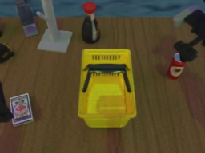
视觉工具实际返回图片 2
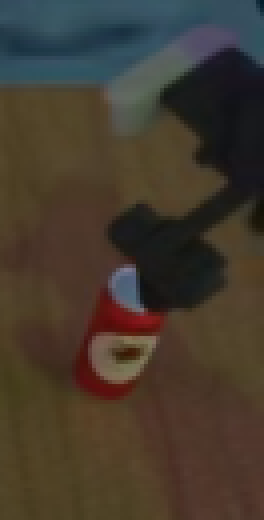
视觉工具实际返回图片 3
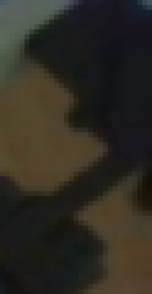
视觉工具实际返回图片 4
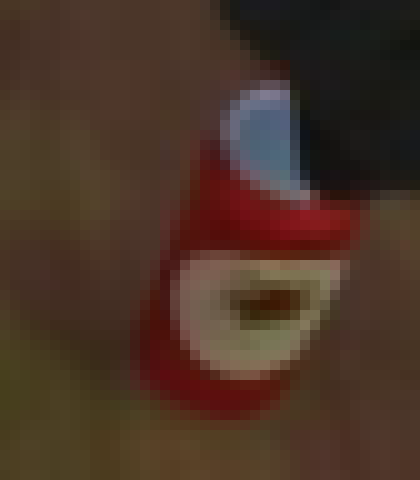
视觉工具实际返回图片 5
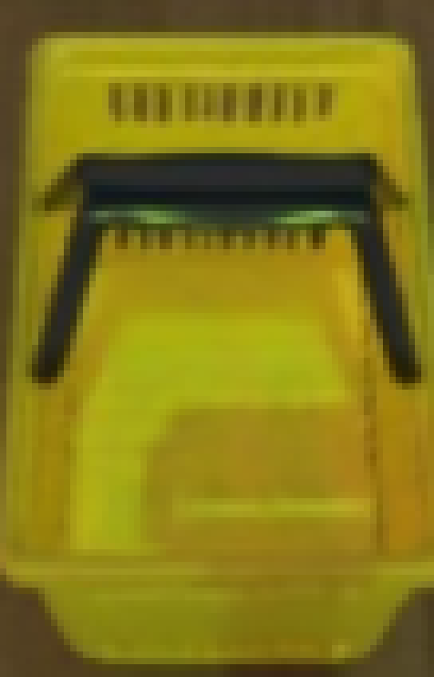
视觉工具实际返回图片 6

视觉工具实际返回图片 7
视觉工具实际返回图片 8
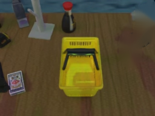
视觉工具实际返回图片 9
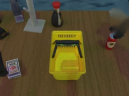
视觉工具实际返回图片 10
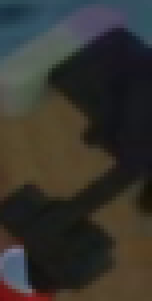
视觉工具实际返回图片 11
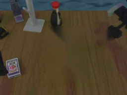
视觉工具实际返回图片 12
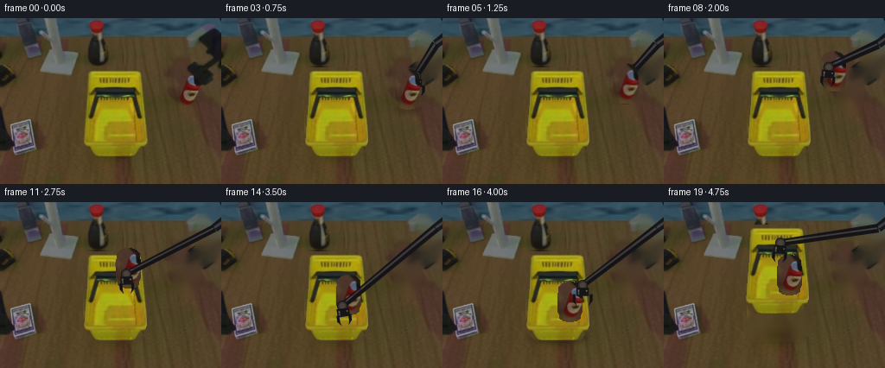
视觉工具实际返回图片 13
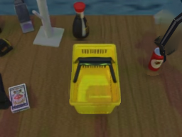
视觉工具实际返回图片 14
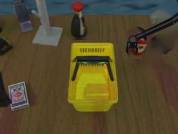
视觉工具实际返回图片 15
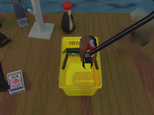
视觉工具实际返回图片 16
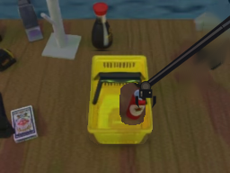
视觉工具实际返回图片 17
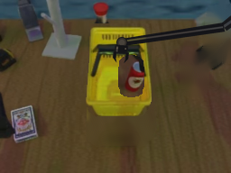
视觉工具实际返回图片 18
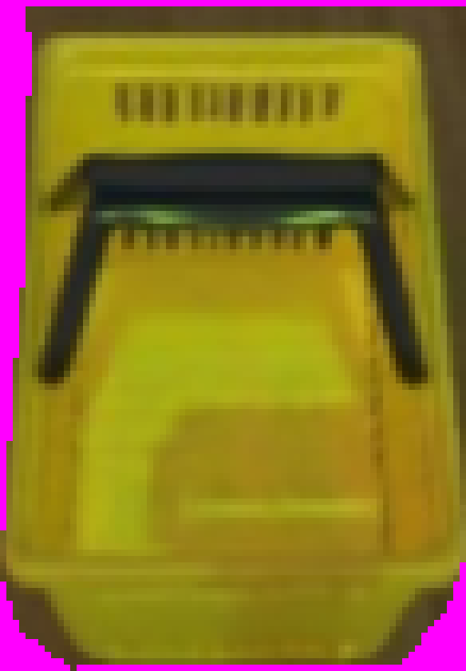
视觉工具实际返回图片 19
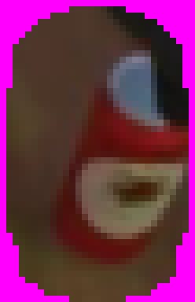
视觉工具实际返回图片 20
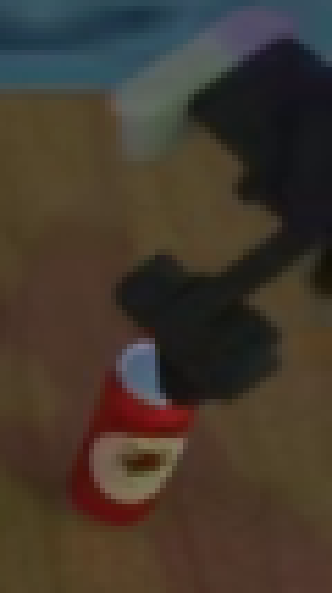
视觉工具实际返回图片 21
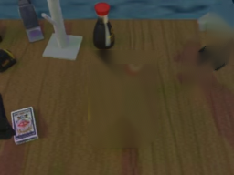
视觉工具实际返回图片 22
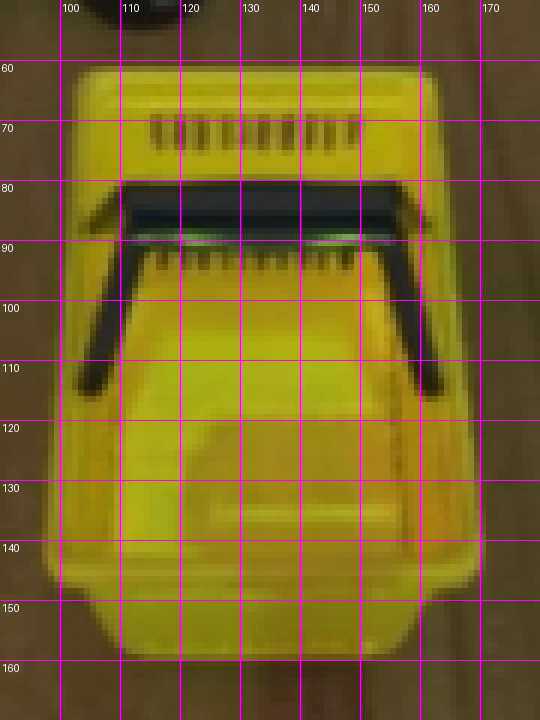
视觉工具实际返回图片 23
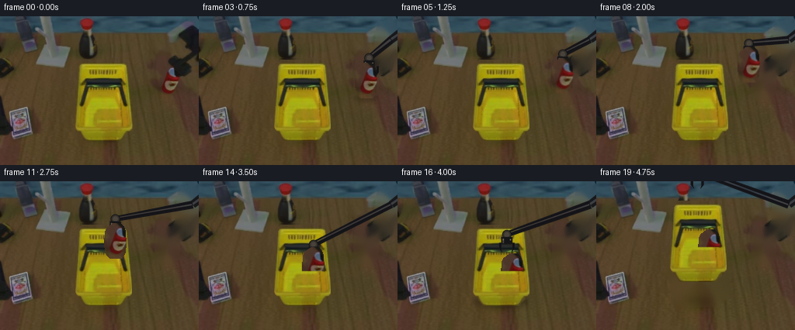
视觉工具实际返回图片 24
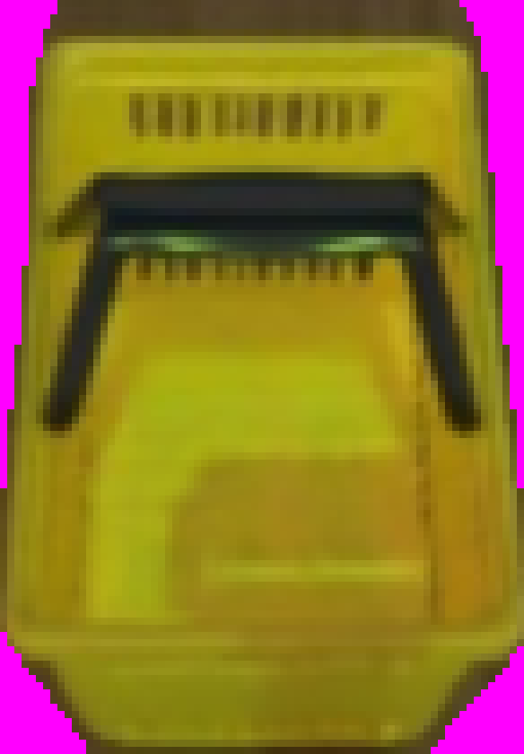
视觉工具实际返回图片 25
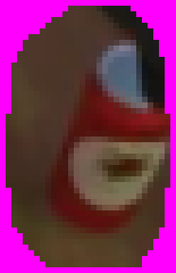
视觉工具实际返回图片 26
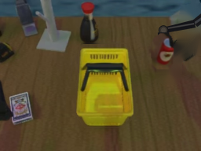
视觉工具实际返回图片 27
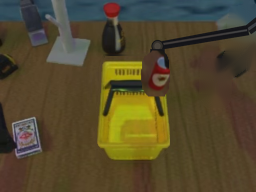
视觉工具实际返回图片 28
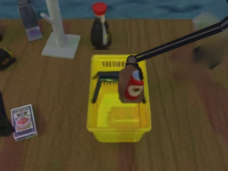
视觉工具实际返回图片 29
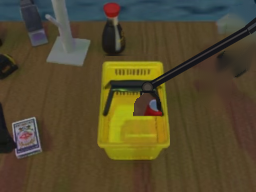
视觉工具实际返回图片 30
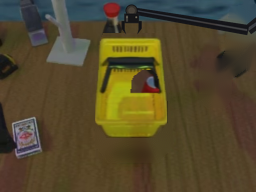
保存候选 3 份；完成命令 28 次；可验证图片返回 30 张。原始 API 响应与完整日志保留在本地。